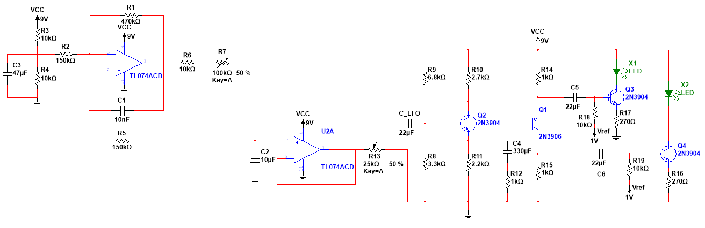
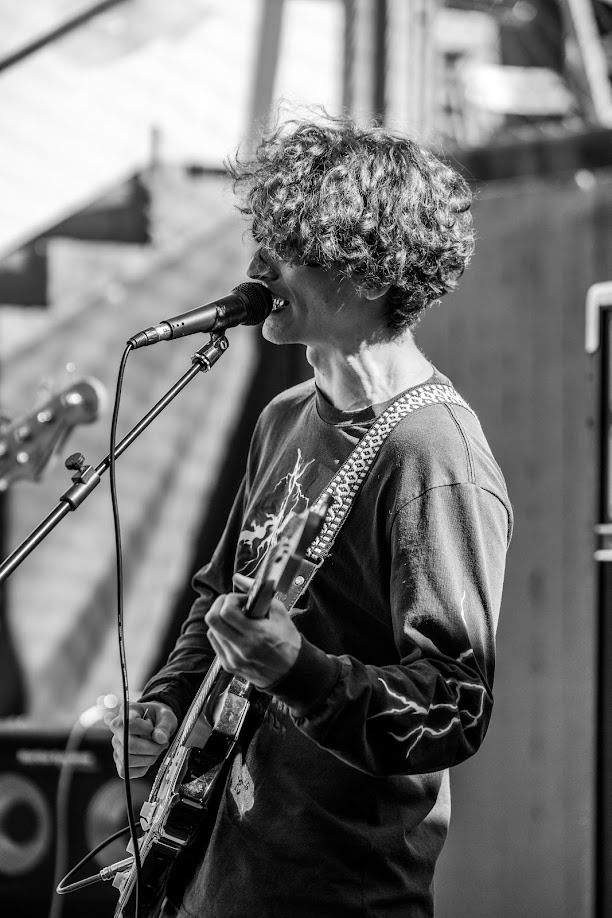

Algorithms
Acoustic analysis, audio signal processing and adaptive real-time systems.
Python · C
Juan Aldrey Alurralde
My work explores sound from different perspectives: acoustic, electronic and digital. That has led me from measuring and simulating acoustic systems, to building analog audio hardware, to developing DSP and active noise control algorithms.
These projects are different parts of the same path. I like understanding how sound behaves in all its dimensions, building systems that interact with it, and evaluating them both as an engineer and as a musician.
Selected work
Hardware and software projects developed during my studies and ongoing research.

01A guitar effect that splits the signal into two frequency bands and modulates them in opposition through LED–LDR optocouplers.
View case study →Engineering practice
Acoustic analysis, audio signal processing and adaptive real-time systems.
Python · C
Embedded audio, electroacoustic prototypes, transducers and analog electronics.
STM32 · Bare metal programming
Room acoustics, wave-based models, numerical optimization, and reproducible computational workflows.
FEM · Gmsh · DOLFINx · Pyroom acoustics

About
I enjoy the precise side of sound engineering: setting a target, building a circuit or algorithm, measuring its response, and adjusting parameters to understand what changed. I like being able to explain what I hear.
I also play guitar, sing, and write music. When I try an effect as a musician, I notice how it responds to my playing, whether the controls help me find a sound, and how that sound works in a song. That listening experience informs the decisions I make as an engineer.